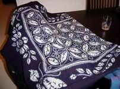

Archives : 2003-03
偶在云南买的东东 @ Mar 13, 2003
镯子一直要偶SHOW一下在云南买的东西，这是其中的几件特地拍了PP上传上来。还买了一些其他的装饰品就不拍了。



有趣的标牌 @ Mar 13, 2003

南京新建图书馆广告 @ Mar 13, 2003


软弱的男性 @ Mar 12, 2003
作者: 渔歌会有时 发表日期: 2003-03-06
是否因为女性在发育过程中天然的先于男性较早成熟，所以在每一个男性的成长路上，都必定需要一些女性的宽容、理解来促使其成长呢？看到法国新浪潮老将埃里克．侯麦在《夏日的诱惑》中温和而又坦率地呈现了一个青年男性的孱弱性格，身为女子，不由得因其中暗含着的滑稽讽刺哑然失笑了。影片讲述的是一名叫加斯帕德的年轻男子趁暑假到海边度假，以期给心目中倾慕的莲娜一个不期而遇的惊喜。他怀着自以为坚定的决心到来，甚至潜心创作要为莲娜写一首船歌，以述自己的忠贞爱慕。然而在风光旖旎，喧哗沸腾的夏日海边，这个清秀的，内向的男子，在相继与三个不同类型的女孩子交往的过程中，逐步暴露了性格中的软弱和幼稚。
轻松的口哨声吟唱着开启了影片的序幕，男主角加斯帕德下船之后，接连五个他一路行进的镜头。在没有遇到第一个女孩玛葛德之前，加斯帕德一个人悠游在海岛上。在忽远忽近的海鸥叫声，海浪声，嘈杂的人声等等真切的环境同期声中，他始终没有一句台词，在他的安静沉默中，似乎隐隐然含着期待。
总是穿着红色泳衣或者红色连衣裙出现的玛葛德，知性而宽容，象投射在加斯帕德心上的一道亲切又温暖的光。影片中表现两人在一起时最多的情节就是一同散步，交谈，在大片大片清新自然的绿色树林与蓝色大海的背景下，唯有这两个鲜活年轻的生命在真诚地交流。加斯帕德得以在玛葛德面前象个兄弟般袒露自己的真实的性格和心理：“我讨厌群体生活……我每次只能见一个朋友……你是我第一个女性朋友……我对征服爱情力量不够……”从这个亦姐亦友的女子的倾听与回应中汲取养料和勇气，并寻求到平静与理解。
如果说玛葛德是代表着男子在精神上需要的那一类红颜知己，那么性感的索琳妮就是男子在肉体上需要的情爱伴侣。和心思婉转的玛葛德不同，她是单纯自然的，以至于她的泳衣都是代表着生命原色的绿色。当加斯帕德从她那里察觉到了散发着情色滋味的诱惑气息的时候，肉体的需要一下子超过了精神上纯洁的沟通，他的心理天平立即就从玛葛德那里向索琳妮偏移了；以至于第二天和索琳妮一起坐在车上邂逅到玛葛德的时候，他自始至终都羞怯地不敢正视心地一片坦荡的玛葛德一眼。然而，往往得到的越是容易，则往往越会不知珍惜。在三个女孩子中，他最不在乎的也是索琳妮。何况索琳妮有着强悍直接的主动性，她会直言不讳的要求加斯帕德的陪伴：“你究竟去还是不去？”并一矢中的地击穿加斯帕德的隐微心理：“男人是低能的，不会去冒险，在他们还未诱惑到别的女孩前，是不会放弃之前的女孩的。”怯懦的不负责任的加斯帕德自然难以招架这样富有攻击性的女孩子，在她面前，他无所遁形，所以很快就一心想逃离或者说摆脱掉这个负担。
当加斯帕德的暑假快近尾声的时候，莲娜终于“千呼万唤始出来”。不同于精神上的玛葛德和肉体上的索琳妮，莲娜代表的是对于男子来说具有着不可言说的神秘吸引力的一类女孩子，她存在于感觉的层面。因此她是穿着象征着神秘的颜色——紫色的泳衣出场的。莲娜一直跳脱于加斯帕德生活之外，象夏日的海风一般来去自由，从不曾真正属于他，这若即若离的距离感造成了加斯帕德对她持久的沉迷留恋——他本来就还是个孩子般的男子，他的爱情就像是童年时那袋被父母置于高橱上的甜蜜糖果，因为一直可望而不可及，所以持续散发着令人无法忘怀的甜香。
当三个女孩都相继出现后，老导演用最后一段戏将矛盾集中起来，让加斯帕德在爱情中左右游移，可笑、可怜又可气的状态显现无疑。当加斯帕德以为莲娜不会陪他去一个海岛度假的时候，他转向请求玛葛德陪他同去；继而又因为无法当面拒绝索琳妮，于是又复答应了带索琳妮去，谁知莲娜又再度告诉他她愿意去了。加斯帕德顿时左右支拙，手足无措。无论单独面对哪一个女孩，他都难以取舍抉择，于是在每一个电话里都支吾犹豫，给予了每一个女孩都不可能兑现的相互矛盾的承诺。对谁都不拒绝，实际上对谁都是一种伤害。他分身乏术，赶紧想向一直以来的依赖对象玛葛德求助。幸而老导演对他保留了一点宽容，出于“连上帝都允许年轻人犯错误”的慈蔼之心，同时也许出于不想在这部安静的影片中制造出喜剧里那种主人公因矛盾无法解决最后窘迫难堪的滑稽场面，所以给他一个台阶下吧——让他凭借找到了急需的音乐器材不得不立即离开海岛这一堂皇的借口回避了矛盾的最后爆发。加斯帕德的确只是个平常的男子，他只会抓住一个客观的契机来消解自己主观上无法解决的问题，明明已经狼狈不堪，只剩这最后的救命稻草了，却还要自欺欺人地为自己开脱：“音乐对我才是最重要的……她们都是好女孩，相信能够理解。” 然而，清醒的玛葛德一语道破问题的实质：“你真有趣，总是自我辩护。”——*男子的荒唐可笑就在于当他们已经不得不仰仗女性的包容忍耐的时候，还始终要保持一副自视甚高、超脱凡事的模样。看到强作姿态，找寻着自以为理由充分实际上却软弱无力的借口*的加斯帕德，一连串如是这般的男人忽忽晃过眼前，他们国籍不同，古今殊异，身份性格也是千差万别，但是在他们生命的某一时刻，都遭遇过这相似的一种尴尬，那是存在于他们每个人身体某处的一根相同的软肋，稍一触碰即痛痒难当。一如郭靖；电视剧《射雕英雄传》片首曲的一个镜头里黄蓉和华珍相继背离他，掉头往相反的方向而去，木讷的他只能左顾右盼，难以抉择何去何从；一如《纯真年代》里的纽伦，他驻足海边遥望着纽伦美丽的背影，却期待着夕阳下即将驶过灯塔的帆船给自己制造一个靠近纽伦的借口：“如果帆船驶过灯塔之前她转过头来，我就走上前去。”而终至于裹足不前；再有《安琪狂想曲》中的理查德，把是否告诉妻子自己有情人之事的决断权诉诸于旁人投掷石头能否进洞：“如果石头进了洞，我就告诉她；否则……”他们或者在需要当机立断的时候，逡巡不前；或者把理应自我抉择的责任推卸到客观的、无足轻重的偶然事件上，以图消解重大选择的艰难程度，实际上都是在逃避艰难的现实抉择。他们甚至不会去承认和设想，要是没有这些契机或者借口出现，他们将怎么为自己辩白？
在《夏日的诱惑》里，导演刻意从7月17日到8月6日，一天天清晰地标注出时光流逝的痕迹，因为就在这短短十几天中，在这几个女子的身旁，有这样一个男子出现、结识、纠缠然后又离开，她们似乎充当了他性格完善过程中的一段阶梯，只是真的希望他在这其间，学会到一点成长。
LIFE IS A SERIES OF HELLOES AND GOODBYES @ Mar 05, 2003
昨晚看了《SEX AND THE CITY》 前两部的六集，从晚上7点一直看到9点半左右，全看完了，后面的三、四部当时店里没有，也不知道什么时候会有的卖，对白挺精彩的，“......你象男人一样去寻欢吗？你爱过吗？你的道德是否也向意大利一样正在下沉？你周围的男人们是否不愿承诺只要做爱？你知道什么是曼哈顿式的结束吗？.......”
专栏作家凯莉思想活跃，深刻尖锐，敏感善良是理性和感性的结合体。她能清晰地看到自己和他人的缺点，但总是掉进各种麻烦的感情里。她一度和比格交往，可拒绝和她结婚的比格却邂逅了模特娜塔莎并闪电结婚。凯莉大受打击，她理性的一面接受了深爱她的亚当，而感性的一面却笃信“得不到的才是最好的”。所以，当比格厌倦了新欢重新回头时，她感性的一面与其发生了关系，而理性的一面却笃信“诚实是最明智的”，并向亚当承认。结果就是，她泪水满面地目送亚当和他破碎的心渐行渐远……
“離情依依”凱莉經典名句
凱莉：當晚我靜下來好好思考宿命.不過是我們為逃避現實而編出的藉口.卻都在意料中.寫在星空下.這或許可以解釋.如果你住在一個連星星都望不見的城市裡.你的感情生活總是隨緣.即使我們的每位男人.每個親吻.每次心痛.都是量身訂作.我們是否仍會因走錯一步而與緣分擦肩而過？我禁不住想：我們是否會因為失誤而與錯過真愛？
Later that night,I’ve got to thinking about fate,the crazy concept that we are not really responsible for the courses our real life takes,But it’s all predictive,reading in the stars,maybe that explains why,if you live in the city,where you can’t even see the stars,your love life tends to feel a little more random,and even if our every man,every kiss,every heartache,is pre-order from some cosmic catalog,can we still take a wrong step and wonder off our personal milkyway?I couldn’t help but wonder,can you make a mistake and miss your fate?
律师玛兰达坚强独立，对工作有自信却惧怕爱情，不能完全释放自己。她渴望有人陪伴，于是请求男友斯蒂夫与她同居。可当她发现同居意味着没有距离和空间的减小时，又突然害怕那种亲密的感觉。于是，斯蒂夫被无情地轰了出去……
夏洛特敏感浪漫，是完全的理想主义者，百分百相信爱情和婚姻。因此她３０多岁了依然坚信灰姑娘和白马王子的故事会发生在自己身上，并期待从此过上幸福快乐的生活。于是，当英俊富有，体贴的特瑞出现时，她牢牢地抓住了这个梦。但现实永远是残酷的，特瑞不为人知的生理缺陷使二人的关系陷入困境，婚姻至上的夏洛特突然发现自己成了出轨的那一个……
公关经理萨曼莎对任何事都充满自信或过度自信，从不掩饰自己的欲望和放荡不羁。她有目标就去追求，本能地展示自己的魅力，并能轻易地和偶遇的男士发生一夜情，却也永远能分清欲望和爱情。萨曼莎享受着她的单身生活，周旋在各式各样的男人中间乐此不疲……

《欲望城市》的幽默和独特观点主要都通过剧中人物的对白来表现。从下面节选的一些经典台词中，可见一斑。
凯莉：我不得不承认，比格让我伤痕累累。我们就像住在高楼上的骄傲女人，被自己的激情灼伤了，害怕重新开始。
萨曼莎：你做完眼睛手术可以让史蒂夫来帮你。
玛兰达：为什么叫他？我不需要男人的帮助，我一个人能应付。再说了，我们只是普通朋友。
萨曼莎：得了。咱们俩是朋友，怎么我不跟你上床？只有女人才是拿来交朋友的，男女之间没有友谊。
凯莉：我们究竟打算怎么办？难道到了８０岁的时候，我们还能像现在这样成天游荡在酒吧，呷着“四海为家”（一种鸡尾酒），然后和陌生人上床？
凯莉：比尔要竞选市长，而不是竞选总统。
萨曼莎：为什么不？他长得那么可爱！
凯莉：这有什么关系？
萨曼莎：当然有。我投票选总统时，都只选长相英俊的那个！
看《欲望城市》是一种享受，因为除了幽默的对白和经典剧情，还可以看到曼哈顿最流行服装款式和上流社会的聚会。凯莉们用尽信用卡里的最后一分钱，掩藏着自己已过３０的年龄，和妙龄少女们争抢为数不多的单身好男人。